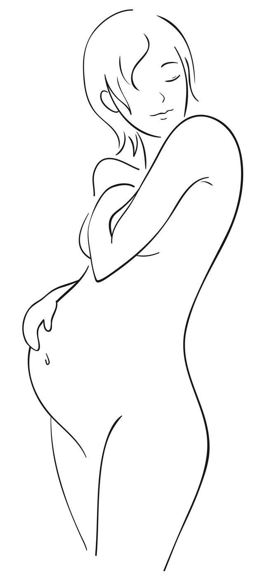

지금까지의 과정을 이해하는 데서 시작합니다.
- 01시도한 기간
- 02두 사람의 검사
- 03다음 진료 단계
| 구분 | 살펴볼 점 | 알려주실 내용 |
|---|---|---|
| 난임, 임신이 어려워지는 | 관련 안내와 진료 과정 | 궁금한 점과 기존 진료 경험 |
| I 난임과 불임은 다른 말입니다. | 관련 안내와 진료 과정 | 궁금한 점과 기존 진료 경험 |
궁금한 항목을 펼쳐보세요.
필요한 설명과 자료를 주제별로 확인할 수 있습니다.
01난임, 임신이 어려워지는＋
난임, 임신이 어려워지는
전화, 문자, 카카오톡, 네이버. 편한 방법으로 문의주시고, 예약하세요.
02I 난임과 불임은 다른 말입니다.＋
임신과 출산을 겪는 여성은 몸의 구조적인 특성과 더불어
일생 동안 변하는 여성호르몬의 영향으로 남성과 다를 수 밖에 없는 건강 문제를 가지고 있습니다.
보다 객관적이고 실질적으로 몸과 마음을 아끼고 사랑할 필요가 있습니다.
여성의 건강을 생각하면 시기별로 특수한 상황의 건강문제를 고려하여야 하고, 또한 개인에 따라 알맞은 건강에 대한 관심과 배려가 있어야 합니다.
그 결과 건강한 엄마와 아빠의 사랑을 바탕으로 세상에서 가장 사랑스러운 아이를 가지게 되는 것이죠.
I 난임과 불임은 다른 말입니다.
난임이란?
1년간 정상적인 부부생활을 하고, 피임을 하지 않았음에도 불구하고 임신이 되지 않는 상태를 난임이라고 합니다.
이때 정상적인 부부생활의 기준은 주2회를 기준으로합니다.
최근에는 영구적이고 부정적 의미인 불임보다 ‘난임’이라는 용어로 대체하는 추세입니다.
난임은 점차 증가추세입니다.
80-90%정도의 부부는 정상적 부부생활을 한다면 1년내에 아이가 생깁니다.
즉, 약 15-20%정도의 부부는 난임과 관련된 진료를 받거나 치료를 받게 된다는 것입니다.
중요한 것,
의학적으로 원인불명이라는 것이 원인이 없다는 것은 아니랍니다.
대부분 난임의 경우 원인불명이라는 말을 많이 듣게 됩니다.
그리고 쉽게 과배란, 인공수정, 시험관아기시술 등을 선택하게 됩니다.
원인불명은 원인이 없다는 것이 아닙니다.
양방적 검사상 원인이 없다 하더라도 한의학적 유형과 원인에 따라 진단이 가능하답니다.
또한, 자궁에 병변이 있다고 자궁만 나으면 난임이 개선되지도 않습니다.
실제로 수많은 난임부부가 문제가 있는 ‘자궁만’, ‘난소만’ 치료하면 되는 줄 알고 있습니다.
원인불명의 경우 당황스럽고 무작정 포기합니다.
하지만 한의학에서는 다양한 방법으로 확률을 높이고 있습니다.
게다가 때로는
여성만의 책임으로 돌리며 난임을 단순 치료대상으로 삼는데 이는 올바른 답이 되지 않습니다.
임상에서 보면 의외로 남성측 원인도 많이 있습니다.
원인이 있는 경우, 남성과 여성으로 구분해보면 통계마다 약간씩 차이가 있지만,
남성 30-50%, 여성 40-60%정도로 여성에서 조금 더 높지만 사실상 큰 차이가 없습니다.
즉, 난임은 부부 모두 함께 노력해야할 부분이라는 것이죠.
양방적으로 대부분은 원인불명인 경우가 20%, 나머지80%는 자궁,난소,복강내 장기의 구조이상과 병변, 배란장애를 원인으로 들 수 있습니다. 남성의 경우 역시 원인불명이 상당수지만 정자수가 적고, 기형이 많고, 정자운동성이 떨어진 경우 난임으로 진단합니다.
건강한 임신을 위해서는 부부가 함께하는 긍정적인 의지와 합리적인 여유가 필요하답니다.
I 여성의 난임
정상적인 부부생활을 1년간 하였음에도, 임신이 되지 않거나 유산이 반복되는 상태를 의미합니다. 정상적인 부부생활의 기준은 주2회를 기준으로 합니다.
결혼한 여성의 15-20%정도가 난임으로 진단됩니다.
난임의 원인이 여성이라면 배란장애가 약 40%정도, 난관, 복강내병변은 30-40%정도며, 자궁병변에 의한 원인은 적습니다.
다시 말하지만, 전체 난임 중 남성측 요인은 30-40%정도 차지한다고 알려져있으며, 난임은 여성의 원인만 있는 것은 아닙니다.
I 한약은 임신 능력을 향상시킵니다.
좋지 않은 월경이라면 개선하세요.
- 생리주기가 불안정, 언제 시작할 지 잘 모릅니다.
- 생리기간은 3일이내 또는 8일 이상 줄줄 지속됩니다.
- 생리통이 매우 심하고 힘듭니다.
- 생리혈이 많고 한낮에도 너무 많아 생리대를 2시간 간격으로 바꾸어야합니다.
- 생리혈이 적고, 많은 날도 평균생리대 2-3회 교환합니다.
- 생리혈이 덩어리지고, 방울방울 묻어나옵니다.
- 생리통이 없으면, 불안 초조해지기 쉽고, 두통이 있거나, 쥐내림(저림)등이 심합니다.
좋지 않은 생활습관은 고쳐보세요.
- 수면부족이 심하고 잘 깹니다.
- 아침식사를 먹지 않는 경우가 많습니다.
- 기상, 취침, 식사 시간 등이 불규칙합니다.
- 운동부족으로 몸을 움직이는 경우가 드뭅니다.
- 가사, 일이 너무 바쁘고 취미활동이나 휴식시간이 부족합니다.
- 가족, 친구와 대화를 나누는 시간이 부족합니다.
- 정서불안, 초조감, 우울감 등 감정의 기복이 심합니다.
- 임신 과정이 너무 불안하고 걱정이 심합니다.
한약은 임신확률을 높이는 훌륭한 방법입니다.
한국이외에도 해외 선진국 등에서도 한약은 임신준비과정 중 추천되는 과정입니다.
기, 혈, 수의 균형을 바른 진단을 통해 진찰합니다.
대부분 결혼 초기 여성분들은 치료를 꼭 해야하는 것이 아닙니다.
신허, 기울, 어혈(혈허), 수체(비만증의 담음과다)의 불균형이 심한 경우라면 추천됩니다.
보통 임신준비한약은
임신능력의 저하가 우려되는 경우(과도한 스트레스, 심한 찬 체질, 자궁 및 난소 기능허약)에 처방됩니다.
침, 뜸, 부항, 약침 등의 치료역시 여성기능을 회복시키기 위한 방법의 대표적인 예입니다.

진료 전, 세 가지만 준비해 주세요.
증상의 기록
가장 불편한 점과 시작한 시점, 반복되는 상황을 알려주세요.
검사와 치료 이력
기존 검사 결과와 복용 중인 약을 함께 확인합니다.
꼭 묻고 싶은 질문
치료 목표와 생활관리 등 궁금했던 점을 편하게 이야기해 주세요.
이 안내는 건강에 대한 이해를 돕는 참고 정보입니다. 증상과 질환에 대한 정확한 판단은 의료진의 진료가 필요합니다.